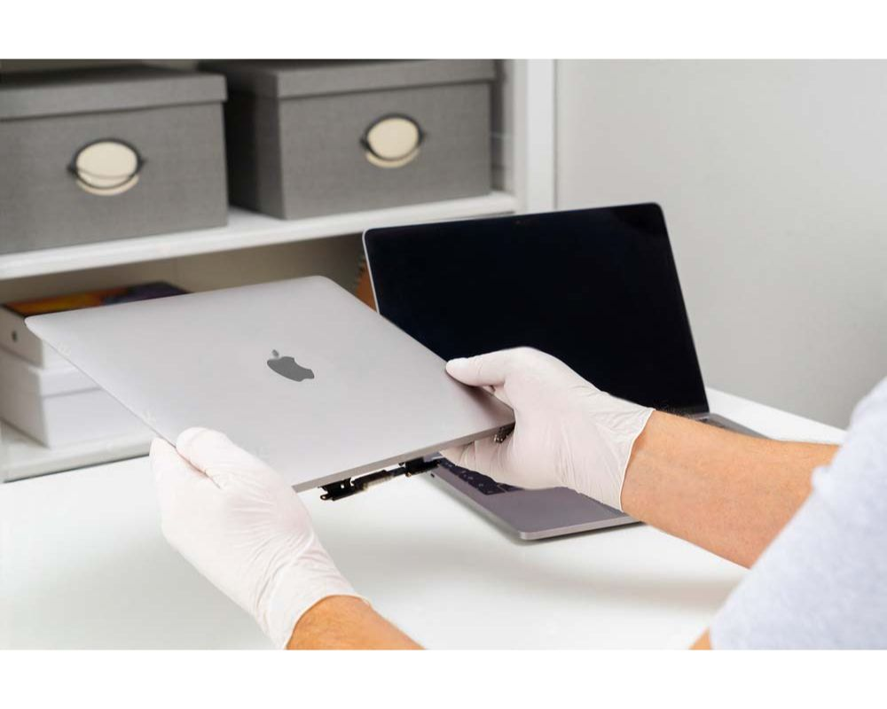

mac taisymas | apple kompiuteriu remontas | macbook remontas | macbook pro remontas | macbook taisymas | apple kompiuteriu taisymas | apple taisykla | apple taisykla vilnius | apple taisymas | mac kompiuteriu taisymas | apple servisas | apple servisas vilnius | kompiuteriu remontas vilnius | kompiuteriu remontas vilniuje | nesiojamu kompiuteriu remontas vilnius | kompiuteriu remontas | nesiojamu kompiuteriu remontas | kompiuteriu taisymas | kompiuteriu taisymas vilnius | kompiuteriu taisymas vilniuje | nesiojamu kompiuteriu taisymas | nesiojamu kompiuteriu taisymas vilniuje | apple taisykla vilnius | macbook ekrano keitimas | kompiuterio remontas | macbook air remontas | macbook air 15 remontas | macbook air 13 remontas | macbook pro remontas | macbook pro 16 remontas | macbook pro 14 remontas | macbook pro 13 remontas | macbook pro 15 remontas | macbook 12 remontas | macbook air taisymas | macbook air 15 taisymas | macbook air 13 taisymas | macbook pro taisymas | macbook pro 16 taisymas | macbook pro 14 taisymas | macbook pro 13 taisymas | macbook pro 15 taisymas | macbook 12 taisymas | macbook air kompiuterio taisymas | macbook air 15 kompiuterio taisymas | macbook air 13 kompiuterio taisymas | macbook pro kompiuterio taisymas | macbook pro 16 kompiuterio taisymas | macbook pro 14 kompiuterio taisymas | macbook pro 13 kompiuterio taisymas | macbook pro 15 kompiuterio taisymas | macbook 12 kompiuterio taisymas | macbook air kompiuterio remontas | macbook air 15 kompiuterio remontas | macbook air 13 kompiuterio remontas | macbook pro kompiuterio remontas | macbook pro 16 kompiuterio remontas | macbook pro 14 kompiuterio remontas | macbook pro 13 kompiuterio remontas | macbook pro 15 kompiuterio remontas | macbook 12 kompiuterio remontas | apple macbook air remontas | apple macbook air 15 remontas | apple macbook air 13 remontas | apple macbook pro remontas | apple macbook pro 16 remontas | apple macbook pro 14 remontas | apple macbook pro 13 remontas | apple macbook pro 15 remontas | apple macbook 12 remontas | apple macbook air taisymas | apple macbook air 15 taisymas | apple macbook air 13 taisymas | apple macbook pro taisymas | apple macbook pro 16 taisymas | apple macbook pro 14 taisymas | apple macbook pro 13 taisymas | apple macbook pro 15 taisymas | apple macbook 12 taisymas | apple macbook air kompiuterio taisymas | apple macbook air 15 kompiuterio taisymas | apple macbook air 13 kompiuterio taisymas | apple macbook pro kompiuterio taisymas | apple macbook pro 16 kompiuterio taisymas | apple macbook pro 14 kompiuterio taisymas | apple macbook pro 13 kompiuterio taisymas | apple macbook pro 15 kompiuterio taisymas | apple macbook 12 kompiuterio taisymas | apple macbook air kompiuterio remontas | apple macbook air 15 kompiuterio remontas | apple macbook air 13 kompiuterio remontas | apple macbook pro kompiuterio remontas | apple macbook pro 16 kompiuterio remontas | apple macbook pro 14 kompiuterio remontas | apple macbook pro 13 kompiuterio remontas | apple macbook pro 15 kompiuterio remontas | apple macbook 12 kompiuterio remontas
Profesionalus ir patikimas Apple įrenginių remontas Vilniuje – it112. Mes siūlome kokybišką ir greitą įvairių modelių MacBook, MacBook Pro ir MacBook Air taisymą. Mūsų paslaugos apima viską nuo ekranų keitimo iki sudėtingų gedimų šalinimo. Atraskite patikimą Apple taisyklą it112 ir užtikrinkite, kad Jūsų įrenginiai veiktų nepriekaištingai. Pasirinkite profesionalus nesiojamų kompiuterių remontas Vilniuje.
PREKINTIS
macbook air 15 taisymas
Kodėl verta rinktis IT112 remontui?
Pasirinkimas, kur atlikti savo įrenginio remontą, gali būti neseniai įsigijus MacBook Air 15 M2 2023. IT112 siūlo aukštos kokybės paslaugas su garantija, kad jūsų įrenginys veiks kaip naujas. Mūsų technikai turi ilgametę patirtį remontuojant Apple produktus, todėl gali greitai ir efektyviai nustatyti gedimo priežastis ir pasiūlyti optimaliausią sprendimą.
macbook pro 16 taisymas
Kodėl verta rinktis IT112 MacBook remontui?
Renkantis paslaugų teikėją savo MacBook Pro 16 remontui, svarbu atkreipti dėmesį į patirtį ir profesionalumą. IT112 yra įmonė, kuri specializuojasi būtent Apple produktų taisyme, užtikrinant aukščiausią kokybės lygį. Mūsų specialistai nuolat mokosi ir atnaujina savo žinias, kad galėtų efektyviai spręsti bet kokias technines problemas, susijusias su MacBook Pro 16 M1, M2, M3 Pro Max modeliais. Mes suprantame, kad jūsų kompiuteris yra svarbus jūsų kasdieniam darbui ir mokslams, todėl siūlome greitą ir patikimą aptarnavimą.
apple macbook air 13 remontas
MacBook Air 13 (2018-2019, A1932) Remontas: Ką Reikia Žinoti?
MacBook Air yra vienas iš populiariausių Apple kompiuterių modelių. Jo plonas dizainas, galingos funkcijos ir ilga baterijos veikimo trukmė jį paverčia idealiu pasirinkimu tiek studentams, tiek profesionalams. Vis dėlto, kaip ir bet kuris elektronikos įrenginys, MacBook Air gali patirti gedimų, ypač po intensyvaus naudojimo. Šiame straipsnyje aptarsime, ką reikia žinoti apie MacBook Air 13 (2018-2019, A1932) remonto galimybes, dažniausius gedimus ir priežiūros patarimus.
macbook pro 13 taisymas
Kodėl verta rinktis profesionalų MacBook remontą?
Apple produktai, žinomi dėl savo kokybės ir patikimumo, kartais reikalauja kvalifikuoto dėmesio, ypač po kelerių metų naudojimo. MacBook Pro 13 A1502, gaminti 2014–2015 metais, iki šiol išlieka populiarūs tarp profesionalų ir mėgėjų dėl jų patvarumo ir funkcionalumo. Tačiau net ir tokie aukštos kokybės įrenginiai kaip šie neapsieina be techninės priežiūros ar remonto. Įmonė IT112 siūlo jums aukščiausio lygio paslaugas, užtikrinančias, kad jūsų MacBook veiktų sklandžiai ir efektyviai.
Ar turite klausimų dėl mūsų produktų, pristatymo proceso ar mokėjimo būdų?
Adresas:
Kalvarijų g. 2, Vilnius
09309, Lietuva